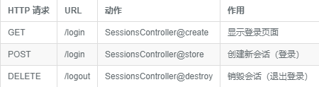

会话
由于 Http 协议是无状态的, 我们无法在两个页面之间保证用户身份的同步, 因此我们需要借助在浏览器中临时存储用户的身份信息, 进而保证在同一浏览器中, 用户在不同页面具有相同登录状态
接下来新建分支, 开始登录登出功能的开发
$ git checkout master
$ git checkout -b login-logout
会话控制器,
首先我们需要新建一个会话控制器, 该控制器将用于处理用户登录登出相关的操作, 你可以把它理解为我们之前提到过的资源, 当用户登陆成功时, 会话将会被创建, 退出登录, 会话被销毁, 只是在这里会话并不会保存到数据库中, 而是保存在浏览器上, 让我们运行下面的命令来生成会话控制器
$ php artisan make:controller SessionsController
下面我们还要对路由进行配置, 添加一些接下来需要用到的路由, 新增的路由分别对应会话控制器的三个动作: create store destory
routes/web.php
<?php
Route::get('/', 'StaticPagesController@home')->name('home');
Route::get('/help', 'StaticPagesController@help')->name('help');
Route::get('/about', 'StaticPagesController@about')->name('about');
Route::get('signup', 'UsersController@create')->name('signup');
Route::resource('users', 'UsersController');
Route::get('login', 'SessionsController@create')->name('login');
Route::post('login', 'SessionsController@store')->name('login');
Route::delete('logout', 'SessionsController@destroy')->name('logout');
新增的路由功能如下:

你也可以使用 Laravel 提供的 route:list 命令来查看已添加的路由
$ php artisan route:list
我们可以通过此命令更好的了解 php 框架
登录表单
在用户填写登录表单时, 只需要用户提供个人邮箱账号和密码信息即可, 由于我们之前给邮箱做了唯一性限制, 因此能够保证所有的注册用户邮箱都不同, 为了确认登陆者为邮箱拥有者本人, 我们需要将邮箱密码进行匹配, 匹配成功的用户将通过认证并登录
接下来我们完善一开始创建的会话控制器, 加入 create 动作, 并返回一个指定的登录视图
app/Http/Controllers/SessionsController.php
<?php
namespace App\Http\Controllers;
use Illuminate\Http\Request;
use App\Http\Requests;
class SessionsController extends Controller
{
public function create()
{
return view('sessions.create');
}
}
让我们新建一个登录视图, 并加上表单信息
resources/views/sessions/create.blade.php
@extends('layouts.default')
@section('title', '登录')
@section('content')
<div class="col-md-offset-2 col-md-8">
<div class="panel panel-default">
<div class="panel-heading">
<h5>登录</h5>
</div>
<div class="panel-body">
@include('shared._errors')
<form method="POST" action="{{ route('login') }}">
{{ csrf_field() }}
<div class="form-group">
<label for="email">邮箱：</label>
<input type="text" name="email" class="form-control" value="{{ old('email') }}">
</div>
<div class="form-group">
<label for="password">密码：</label>
<input type="password" name="password" class="form-control" value="{{ old('password') }}">
</div>
<button type="submit" class="btn btn-primary">登录</button>
</form>
<hr>
<p>还没账号？<a href="{{ route('signup') }}">现在注册！</a></p>
</div>
</div>
</div>
@stop
上面构建的表单中有一行我们需要特别关注
<form method="POST" action="{{ route('login') }}">
我们在前面新增的路由中, 有两个路由的命名完全一致, 但是由于我们在表单中清楚的指明了使用 POST 动作来提交用户的登录信息, 因此 Laravel 会自动将该请求映射到会话控制器的 store 上
这时候访问 sample.test/login 页面已经能够看到登录页面可以正常显示, 但现在表单仍然处于不可用状态, 因为我们还没有对用户发送的登录请求做任何处理
认证用户身份
Laravel 默认提供的内置认证控制器功能非常强大, 只需要你做简单的几行代码配置即可完成整个登录功能的构建, 但是在本教程中, 为了让新手对整个用户登录流程有更加清楚的了解, 为此我们将使用手动认证的方式来一步步实现用户的登录功能
在我们成功构建用户的登录表单之后, 我们需要在会话控制器中创建 store 动作来对用户提交的数据进行验证
app/Http/Controllers/SessionsController.php
<?php
namespace App\Http\Controllers;
use Illuminate\Http\Request;
use App\Http\Requests;
class SessionsController extends Controller
{
public function create()
{
return view('sessions.create');
}
public function store(Request $request)
{
$credentials = $this->validate($request, [
'email' => 'required|email|max:255',
'password' => 'required'
]);
return;
}
}
我们可以看到, 在 store 动作中的数据验证和之前的有所不同, 因为在这里只需要保证用户输入的值不为空且格式正确即可,
当用户填写的信息验证通过之后, 我们还需要对用户提供的信息进行用户身份认证, 因为验证通过只能说明用户提交的信息格式是正确的, 但是不能保证用户信息是否存在于数据库中
我么可以使用 Illuminate\Http\Request 实例来接受用户所有输入数据, 当我们需要取出 Requests 实例的单个值
$request->email;
当 $request 请求中包含 email 字段时, 上面这行代码将返回邮箱信息
借助 laravel 的 Auth 的 attempt 方法可以让我们很方便的完成用户的身份认证操作
if (Auth:attempt(['email' => $email, 'password' => $password])){
// 还用户存在并且输入信息一致
}
attempt 方法会接收一个数组来作为第一个参数, 该参数提供的值将用于寻找数据库中的用户数据, 因此在上面的例子中, attempt 方法执行的代码逻辑如下:
- 使用 email 字段的值在数据库中进行查找
- 如果用户被找到,
1) 将传参的 password 值进行哈希加密, 然后与数据库中的password 字段中已加密的密码进行匹配
2) 如果匹配后两个值完全一致, 会创建一个会话给通过的用户, 会话在创建的同时, 也会种下一个名为 laravel_session 的 HTTPCookie. 以此cookie 来记录用户的登录状态, 最终返回 true
3) 如果不匹配, 则返回 false
- 如果用户并未被找到, 返回 false
结合 atempt 方法对用户身份进行认证的具体代码如下, 使用 Auth 前需要对其进行引用
app/Http/Controllers/SessionsController.php
<?php
namespace App\Http\Controllers;
.
.
.
use Auth;
class SessionsController extends Controller
{
.
.
.
public function store(Request $request)
{
$credentials = $this->validate($request, [
'email' => 'required|email|max:255',
'password' => 'required'
]);
if (Auth::attempt($credentials)) {
// 登录成功后的相关操作
} else {
// 登录失败后的相关操作
}
return;
}
}
消息提示以及页面重定向
现在 store 方法已经能够万恒用户身份的认证操作了, 接下来我们需要针对用户认证成功或失败的情况做不同处理.
登录失败时, 需要在顶部提示信息, 并且重定向到登录页面
在用户登录失败之后吗我们试用以下代码
session()->flash('danger', '用户名与密码不匹配!');
由于 danger 在 bootstrsap 中有着特殊含义, 借助我们在前面章节定义的消息提示局部视图, 可以使得页面上的消息提示更加美观
在用户登录成功之后我还需要将用户重定向到个人页面(你想让他定向到的地方), 让用户可以第一时间查看自己的信息, 而当用户登录失败之后, 让他尝试重新登录, 接下来我们接着完善 store 方法, 加入消息提示和页面重定向操作.
app/Http/Controllers/SessionsController.php
<?php
namespace App\Http\Controllers;
.
.
.
class SessionsController extends Controller
{
.
.
.
public function store(Request $request)
{
$credentials = $this->validate($request, [
'email' => 'required|email|max:255',
'password' => 'required'
]);
if (Auth::attempt($credentials)) {
session()->flash('success', '欢迎回来！');
return redirect()->route('users.show', [Auth::user()]);
} else {
session()->flash('danger', '很抱歉，您的邮箱和密码不匹配');
return redirect()->back();
}
}
}
我们在 store 方法内使用了 Laravel 提供的 Auth::user() 方法来提取 当前登录用户 的信息, 并将数据传送给路由
我们来试一试: